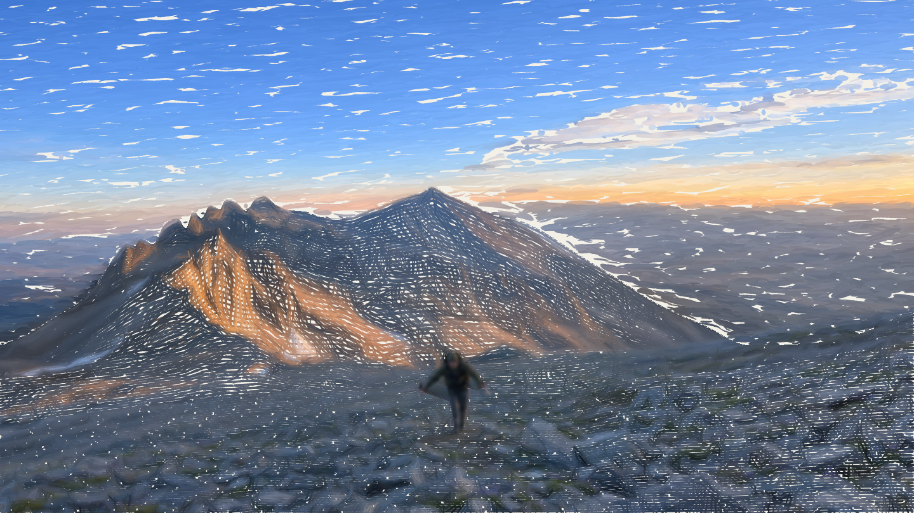

A climber crossing a rocky alpine slope beneath a mountain ridge in warm light. Drag the slider to build a painting, from a rough sketch to layered colored brushstrokes.

Peter Gramaglia
AboutDrag the slider or use the arrow keys to draw the landscape. Home returns to the sketch; End completes the painting.